한국사능력검정시험-심화 (2017-05-27 기출문제)
1. (가) 시대의 생활 모습으로 옳은 것은? [2점]
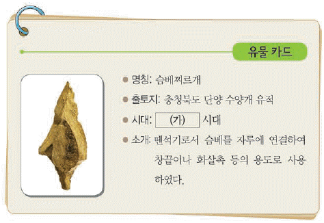
- 빗살무늬토기를 제작하였다.
- 주로 동굴이나, 강가의 막집에서 살았다.
- 지배층의 무덤으로 고인돌을 축조하였다.
- 반달 돌칼을 사용하여 곡물을 수확하였다.
- 가락바퀴와 뼈바늘을 이용하여 옷을 만들었다.
(정답률: 95%)

2. 교사의 질문에 대한 학생의 답변으로 옳은 것은? [2점]
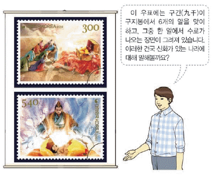
- 덩이쇠를 화폐처럼 사용하였습니다.
- 12월에 영고라는 제천 행사를 열었습니다.
- 제가 회의에서 국가 중대사를 결정하였습니다.
- 박, 석, 김의 3성이 교대로 왕위를 계승하였습니다.
- 마한의 목지국을 압도하고 지역의 맹주로 발돋움하였습니다.
(정답률: 74%)
3. 밑줄 그은 ‘왕’의 업적으로 옳은 것은? [2점]
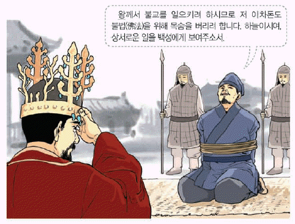
- 병부와 상대등을 설치하였다.
- 중앙 관청을 22부로 확대하였다.
- 거칠부에서 국사를 편찬하게 하였다.
- 이사부를 보내 우산국을 복속시켰다.
- 지방에 담로를 두고 왕족을 파견하였다.
(정답률: 77%)
4. (가), (나) 사이의 시기에 있었던 사실로 옳은 것은? [3점]
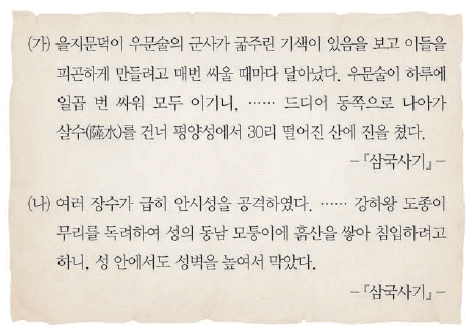
- 진흥왕이 대가야를 공격하여 멸망시켰다.
- 연개소문이 정변을 일으켜 권력을 장악하였다.
- 장수왕이 백제를 공격하여 한성을 함락시켰다.
- 계백이 이끄는 군대가 황산벌에서 결사 항전하였다.
- 근초고왕이 평양성을 공격하여 고국원왕을 전사시켰다.
(정답률: 87%)
5. 다음 문화유산에 대한 설명으로 옳은 것을<보기>에서 고른 것은?[2점]
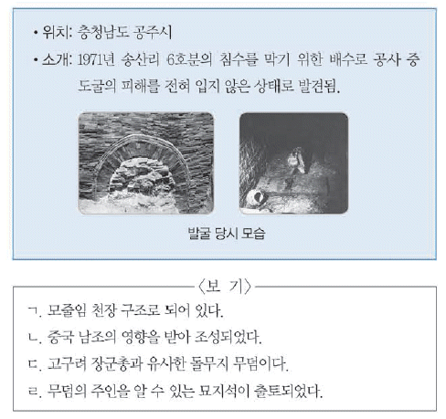
- ㄱ, ㄴ
- .ㄱ, ㄷ
- ㄴ, ㄷ
- ㄴ, ㄹ
- ㄷ, ㄹ
(정답률: 69%)
6. (가) 국가의 경제에 대한 설명으로 옳은 것은?[2점]
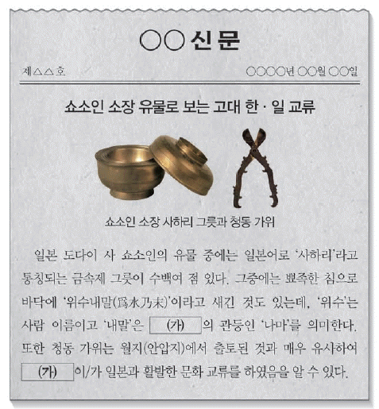
- 솔빈부의 말이 특산물로 유명하였다.
- 벽란도를 통해 송 상인과 교역하였다.
- 청해진이 국제 무역 거점으로 번성하였다.
- 빈민을 구제하기 위한 진대법을 시행하였다.
- 토지의 비옥도를 6등급으로 나누어 전세를 부과하였다
(정답률: 65%)
7. 밑줄 그은 ‘이 불상’으로 옳은 것은?[3점]
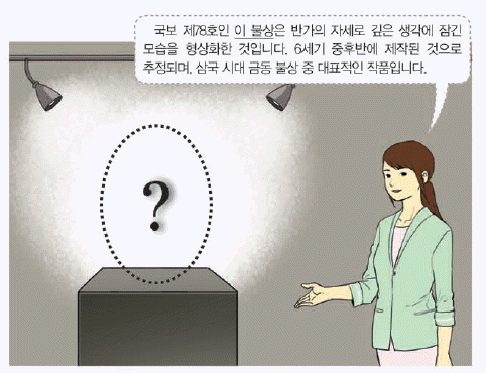
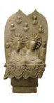
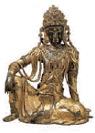
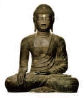
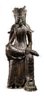
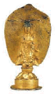
(정답률: 75%)
8. 다음 자료의 인물에 대한 설명으로 옳은 것은?[1점]
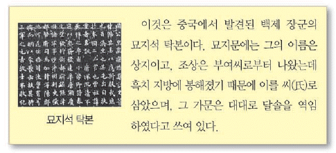
- 김흠돌의 반란을 진압하였다.
- 완산주에 도읍하고 나라를 세웠다.
- 국호를 마진으로 바꾸고 철원으로 천도하였다.
- 임존성에서 소정방이 이끄는 당군을 격퇴하였다.
- 안승을 왕으로 받들어 나라를 다시 세우고자 하였다.
(정답률: 48%)
9. 다음에서 설명하는 문화유산을 지도에서 옳게 찾은 것은? [1점]
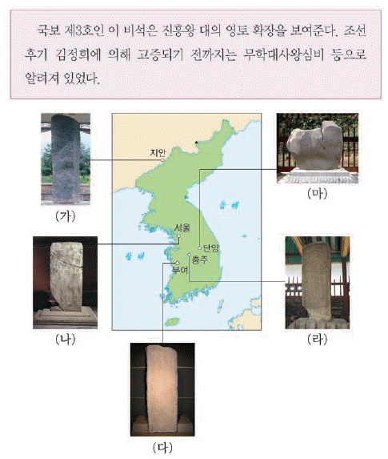
- (가)
- (나)
- (다)
- (라)
- (마)
(정답률: 55%)
10. (가) 국가에 대한 설명으로 옳은 것은? [2점]
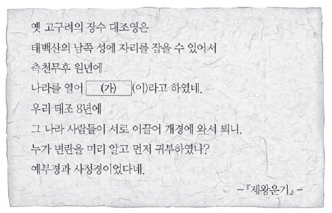
- 골품에 따라 관등 승진의 제한이 있었다.
- 주자감을 설치하여 유교 경전을 교육하였다.
- 독서삼품과를 마련하여 인재를 등용하고자 하였다.
- 오경박사, 의박사, 역박사 등을 일본에 파견하였다.
- 사회 질서를 유지하기 위해 범금 8조를 제정하였다.
(정답률: 82%)
11. 밑줄 그은 ‘왕’의 업적으로 옳은 것은? [2점]
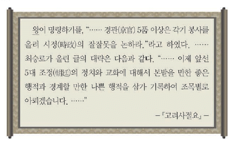
- 12목을 설치하고 지방관을 파견하였다.
- 관학 진흥을 위해 양현고를 설치하였다.
- 왕권 강화를 위해 노비안검법을 실시하였다.
- 신돈을 등용하고 전민변정도감을 설치하였다.
- 빈민을 구제하기 위해 흑창을 처음 설치하였다.
(정답률: 81%)
12. (가)에 대한 고려의 대응으로 옳은 것은? [2점]
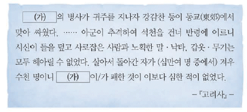
- 화포를 사용하여 진포에서 격퇴하였다.
- 별무반을 편성하여 동북 9성을 개척하였다.
- 개경에 나성을 축조하여 침입에 대비하였다.
- 이종무로 하여금 근거지를 정벌하게 하였다.
- 도읍을 강화도로 옮겨 장기 항쟁을 준비하였다.
(정답률: 77%)
13. 다음 제도를 운영한 국가의 지방 통치에 대한 설명으로 옳은 것은? [2점]
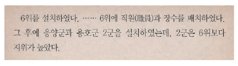
- 전국을 5경 15부 62주로 나누었다.
- 특수 행정 구역으로 향, 부곡, 소가 있었다.
- 지방 장관으로 욕살, 처려근지 등을 두었다.
- 상수리 제도를 실시하여 지방 세력을 견제하였다.
- 수도의 위치가 치우친 것을 보완하기 위해 5소경을 설치하였다.
(정답률: 67%)
14. (가) 지역에서 있었던 사실로 옳은 것은? [2점]
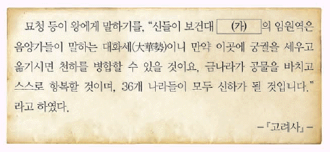
- 망이ㆍ망소이가 난을 일으켰다.
- 정몽주가 이방원 세력에 의해 피살되었다.
- 우리나라 최초의 근대 교육 기관이 설립되었다.
- 몽골의 침입으로 황룡사 구층 목탑이 소실되었다.
- 조만식 등을 중심으로 조선 물산 장려회가 발족되었다.
(정답률: 50%)
15. 다음 가상 대화가 이루어진 시기에 볼 수 있는 모습으로 적절한 것은? [1점]
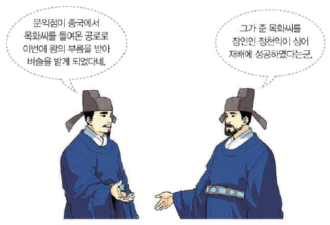
- 녹읍 폐지를 명하는 국왕
- 농상집요를 소개하는 관리
- 당백전을 주조하는 관청 소속 장인
- 공가를 받고 관청에 물품을 납부하는 공인
- 고추, 담배 등을 상품 작물로 재배하는 농민
(정답률: 56%)
16. (가), (나) 사이의 시기에 있었던 사실로 옳은 것은? [3점]
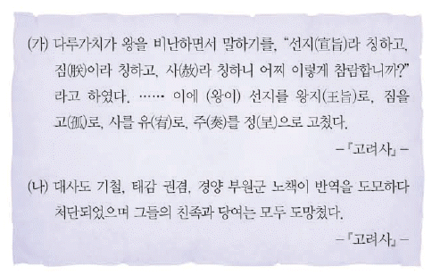
- 일본 원정을 위해 정동행성이 설치되었다.
- 경기 지역에 한하여 과전법이 실시되었다.
- 김윤후가 처인성에서 살리타를 사살하였다.
- 정중부 등이 정변을 일으켜 권력을 장악하였다.
- 우왕이 요동 정벌을 위해 이성계를 파견하였다.
(정답률: 61%)
17. (가)에 대한 설명으로 옳은 것은? [2점]
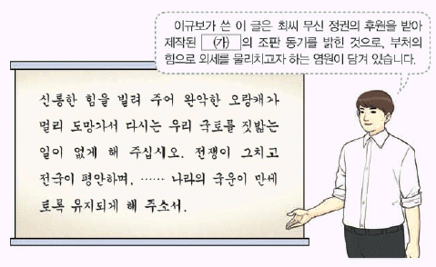
- 자장의 건의로 만들어졌다.
- 현존하는 최고(最古)의 금속 활자본이다.
- 유네스코 세계 기록 유산으로 등재되었다.
- 현재 프랑스 국립 도서관에 보관되어 있다.
- 불국사 삼층 석탑을 보수하는 과정에서 발견되었다.
(정답률: 67%)
18. 다음 인물의 활동으로 옳은 것은? [2점]
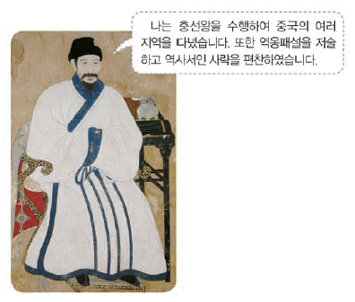
- 고려에 성리학을 최초로 소개하였다.
- 9재 학당을 세워 유학 교육에 힘썼다.
- 만권당에서 원의 학자들과 교유하였다.
- 양명학을 연구하여 강화 학파를 형성하였다.
- 성리학을 도식으로 설명한 성학십도를 저술하였다.
(정답률: 64%)
19. 다음 사건이 일어난 시기을 연표에서 옳게 고른 것은? [3점]
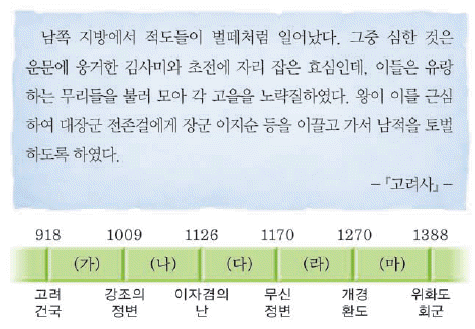
- (가)
- (나)
- (다)
- (라)
- (마)
(정답률: 73%)
20. (가)에 행해지던 풍습으로 가장 적절한 것은? [1점]
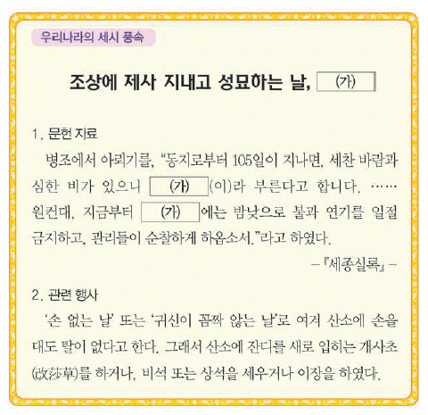
- 진달래꽃으로 화전 부치기
- 새알심을 넣어 팥죽 만들기
- 창포를 삶은 물로 머리감기
- 불을 사용하지 않고 찬 음식 먹기
- 부스럼을 예방하기 위한 부럼 깨기
(정답률: 57%)
21. 다음 대회의 왕이 재위했던 시기의 사실로 옳은 것은? [2점]
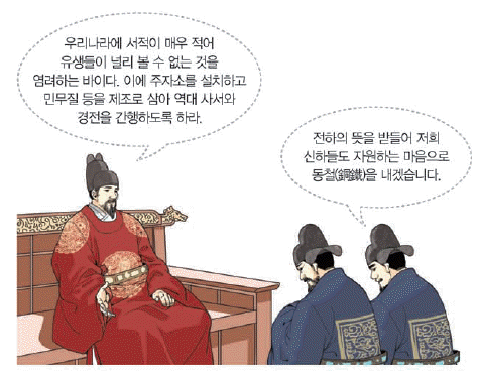
- 집현전을 계승한 홍문관이 설치되었다.
- 전통 한의학을 정리한 동의보감이 간행되었다.
- 강우량을 측정하기 위한 측우기가 제작되었다.
- 역대 문물을 정리한 동국문헌비고가 편찬되었다.
- 세계 지도인 혼일강리역대국도지도가 제작되었다.
(정답률: 50%)
22. (가) 인물에 대한 설명으로 옳은 것은? [3점]
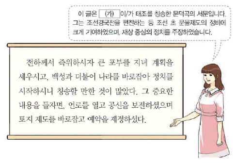
- 불씨잡변을 지어 불교를 비판하였다.
- 계유정난을 계기로 정계에서 축출되었다.
- 일본에 다녀와서 해동제국기를 편찬하였다.
- 인재 등용을 위해 현량과 실시를 건의하였다.
- 방납의 폐단을 줄이고자 수미법을 주장하였다.
(정답률: 78%)
23. (가) 기관에 대한 설명으로 옳은 것은? [1점]
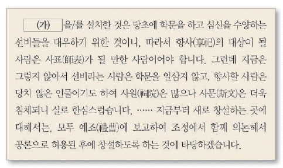
- 주세붕에 의해 처음 세워졌다.
- 좌수와 별감을 중심으로 운영되엇다.
- 중앙에서 교수와 훈도가 파견되었다.
- 조광조를 비롯한 사림의 건의로 혁파되었다.
- 매향 활동을 하면서 각종 불교 행사를 주관하였다.
(정답률: 49%)
24. 밑줄 그은 ‘왕’의 재위 기간에 있었던 사실로 옳은 것은? [2점]
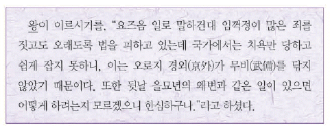
- 자의 대비의 복상 문제로 예송이 전개되었다.
- 외척 간의 권력 다툼으로 을사사화가 발생하였다.
- 김종직 등 사림이 중앙 정계에 진출하기 시작하였다.
- 사림이 이조 전랑 임명을 둘러싸고 동인과 서인으로 나뉘었다.
- 폐비 윤씨 사사 사건의 전말이 알려져 관련자들이 화를 입었다.
(정답률: 64%)
25. (가) 군사 조직에 대한 설명으로 옳은 것은? [2점]
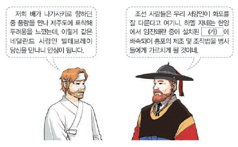
- 국경 지역인 양계에 배치되었다.
- 소속 군인에게 군인전이 지급되었다.
- 포수, 사수, 살수의 삼수병으로 편제되었다.
- 유사시에 향토 방위를 담당하는 예비군이었다.
- 국왕의 친위 부대로 수원 화성에 외영을 두었다.
(정답률: 76%)
26. 다음 상황이 전개된 이후의 사실로 옳은 것은? [1점]
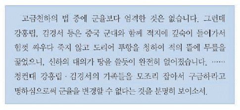
- 김종서가 여진을 몰아내고 6진을 개척하였다.
- 조ㆍ명 연합군이 평양성 전투에서 승리하였다.
- 정여립 모반 사건을 계기로 기축옥사가 일어났다.
- 인조반정으로 서인이 정국의 주도권을 장악하였다.
- 제한된 범위의 무역을 허용한 계해약조가 체결되었다.
(정답률: 66%)
27. (가) 왕이 실시한 정책으로 옳은 것은? [2점]
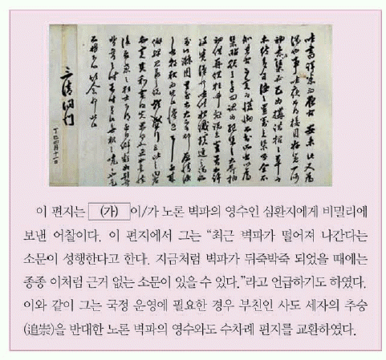
- 양전 사업을 실시하고 지계를 발급하였다.
- 속대전을 편찬하여 통치 체제를 정비하였다.
- 청과의 경계를 정한 백두산 정계비를 세웠다.
- 삼군부를 부활시켜 군국 기무를 전담하게 하였다.
- 유능한 인재를 양성하기 위해 초계문신제를 시행하였다.
(정답률: 57%)
28. 다음 자료에 나타난 시기의 경제 상황으로 옳지 않은 것은? [2점]
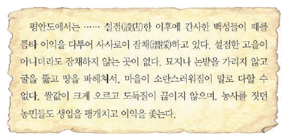
- 상평통보가 시장에서 유통되었다.
- 강희맹이 농서인 금양잡록을 저술하였다.
- 보부상이 장시를 돌아다니며 활동 하였다.
- 송상, 만상이 대청 무역으로 부를 축적하였다.
- 왜관에서 개시 무역과 후시무역이 이루어졌다.
(정답률: 61%)
29. 다음 글이 작성된 당시의 문화에 대한 설명으로 옳은 것은? [3점]
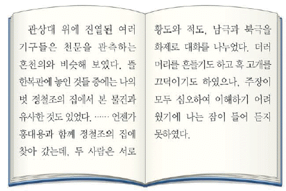
- 안견이 몽유도원도를 그렸다.
- 김시습이 금오신화를 저술하였다.
- 성현 등이 악학궤범을 편찬하였다.
- 한글 소설과 사설시조가 유행하였다.
- 서예에서 조맹부의 송설체가 도입되었다.
(정답률: 61%)
30. 밑줄 그은 ‘이 사건’에 대한 설명으로 옳은 것은? [2점]
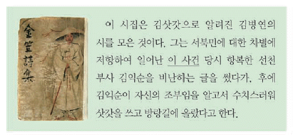
- 백낙신이 탐학이 발단이 되었다.
- 집강소가 설치되는 결과를 가져왔다.
- 보국안민, 제폭구민을 기피로 내걸었다.
- 홍경래의 주도로 가산, 정주성 등을 점령하였다.
- 사건의 수습을 위해 박규수가 안핵사로 파견되었다.
(정답률: 76%)
31. (가)에 대한 서명으로 옳은 것을 <보기>에서 고른 것은? [1점]
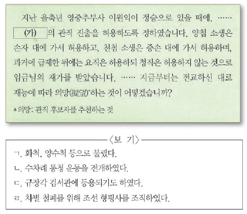
- ㄱ, ㄴ
- ㄱ, ㄷ
- ㄴ, ㄷ
- ㄴ, ㄹ
- ㄷ, ㄹ
(정답률: 61%)
32. (가)에 들어갈 내용으로 가장 적절한 것은? [2점]
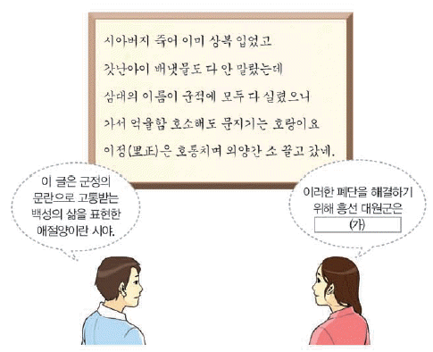
- 양반에게도 군포를 징수하는 호포제를 실시했어.
- 전세를 1결당 4~6두로 고정하는 영정법을 실시했어.
- 현직 관리에게만 과전을 지급하는 직전법을 시행했어.
- 봄에 곡식을 빌려주고 가을에 갚도록 하는 의창을 설치했어.
- 기금을 모아 그 이자로 빈민을 구제하는 제위보를 마련했어.
(정답률: 78%)
33. 밑줄 그은 ‘이 사건’에 대한 설명으로 옳은 것은? [2점]
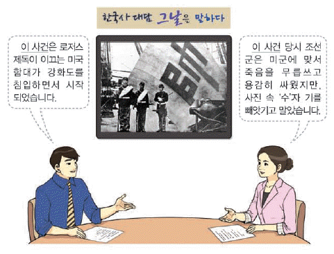
- 운요호 사건이 원인이 되었다.
- 병인박해가 일어나는 계기가 되었다.
- 톈진 조약이 체결되는 배경이 되었다.
- 어재연 부대가 광성보에서 항전하였다.
- 외규장각 도서가 약탈되는 피해를 입었다.
(정답률: 77%)
34. 다음 상황이 전개된 배경으로 가장 적절한 것은? [3점]
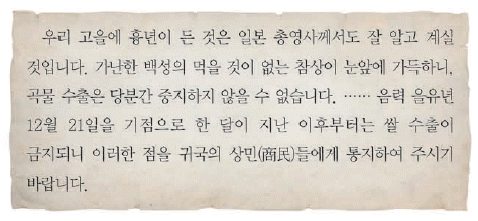
- 조ㆍ일 통상 장정이 체결되었다.
- 러시아가 절영도 조차를 시도하였다.
- 일본이 황무지 개간권을 요구하였다.
- 시전 상인들이 황국 중앙 총상회를 조직하였다.
- 메가타의 주도로 화폐 정리 사업이 실시되었다.
(정답률: 73%)
35. 다음 조약 체결의 계기가 된 사건으로 옳은 것은? [2점]
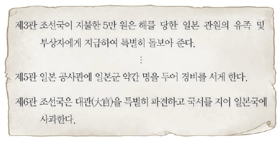
- 구식 군인들이 임오군란을 일으켰다.
- 영국이 거문도를 불법으로 점령하였다.
- 고종이 러시아 공사관으로 거처를 옮겼다.
- 전봉준이 이끄는 농민군이 전주성을 점령하였다.
- 김옥균 등이 우정총국 개국 축하연을 기회로 정변을 일으켰다.
(정답률: 58%)
36. 다음 글이 작성된 시기를 연표에서 옳게 고른 것은? [2점]
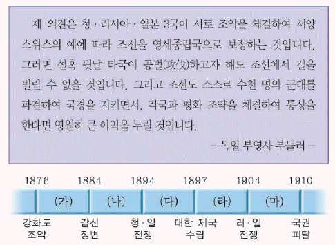
- (가)
- (나)
- (다)
- (라)
- (마)
(정답률: 39%)
37. 다음 조서가 반포된 이후의 사실로 옳은 것은? [2점]
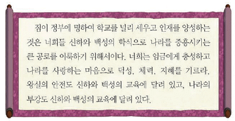
- 박문국이 설치되었다.
- 육영 공원이 세워졌다.
- 조사 시찰단이 파견되었다.
- 통리기무아문이 설치되었다.
- 한성 사범학교가 건립되었다.
(정답률: 61%)
38. 다음 인물에 대한 설명으로 옳은 것은? [2점]
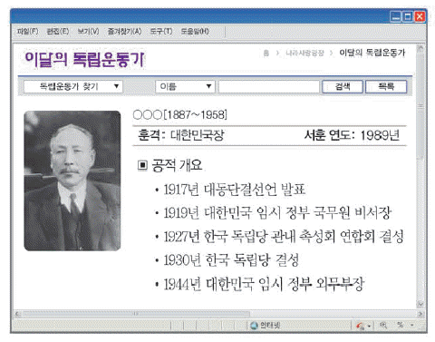
- 도쿄에서 일왕의 행렬에 폭탄을 투척하였다.
- 재미 한인을 중심으로 흥사단을 조직하였다.
- 일본의 침략 과정을 서술한 한국통사를 저술하였다.
- 새로운 국가 건설의 이념으로 삼균주의를 주장하였다.
- 일제의 패망과 광복에 대비하여 조선 건국 동맹을 결성하였다.
(정답률: 47%)
39. (가)에 들어갈 내용으로 옳은 것은? [1점]
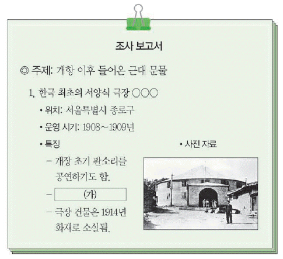
- 알렌의 건의로 만들어졌다.
- 나운규의 아리랑이 개봉되었다.
- 신간회 창립 대회가 개최되었다.
- 고종의 황제 즉위식이 거행되었다.
- 은세계, 치악산 등의 신극이 공연되었다.
(정답률: 56%)
40. 다음 조약이 체결된 이후의 사실로 옳은 것은? [3점]
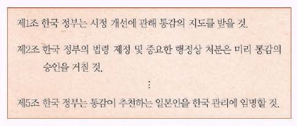
- 이만손 등이 영남 만인소를 올렸다.
- 최익현이 태인에서 의병을 일으켰다.
- 독립 협회가 만민 공동회를 개최하였다.
- 민영환이 조약 체결에 항거하여 순국하였다.
- 13도 연합 의병이 서울 진공 작전을 전개하였다.
(정답률: 43%)
41. 다음 민족 운동의 배경으로 옳은 것을 <보기>에서 고른 것은? [2점]
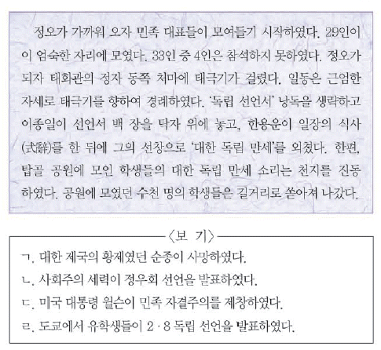
- ㄱ, ㄴ
- ㄱ, ㄷ
- ㄴ, ㄷ
- ㄴ, ㄹ
- ㄷ, ㄹ
(정답률: 71%)
42. (가)의 활동으로 옳지 않은 것은? [2점]
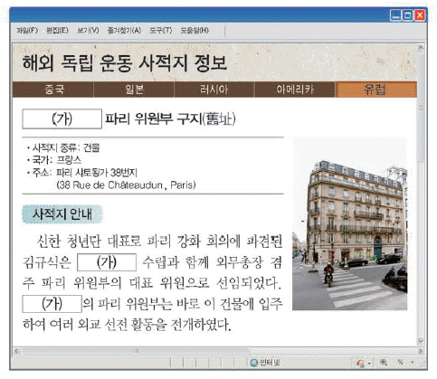
- 국내 비밀 행정 조직으로 연통제를 두었다.
- 독립 의식을 고취하기 위해 독립신문을 간행하였다.
- 독립운동 자금 마련을 위해 독립 공채를 발행하였다.
- 대성 학교와 오산학교를 세워 민족 교육을 전개하였다.
- 임시 사료 편찬 위원회를 두고 한ㆍ일 관계 사료집을 발간하였다.
(정답률: 54%)
43. (가) 지역에서 일어난 민족운동으로 옳은 것은? [1점]
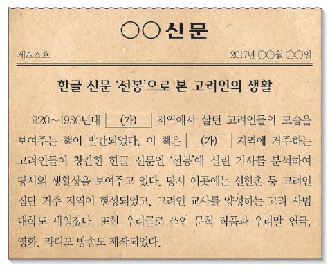
- 독립군 양성을 위해 신흥 강습소를 설립하였다.
- 대조선 국민 군단을 조직하여 군사훈련을 하였다.
- 권업회를 조직하고 대한 광복군 정부를 수립하였다.
- 대한인 국민회를 중심으로 외교 활동을 전개하였다.
- 민족 교육을 위해 서전서숙, 명동 학교 등을 건립하였다.
(정답률: 49%)
44. 다음 지역에 대한 탐구 활동으로 적절하지 않은 것은? [2점]
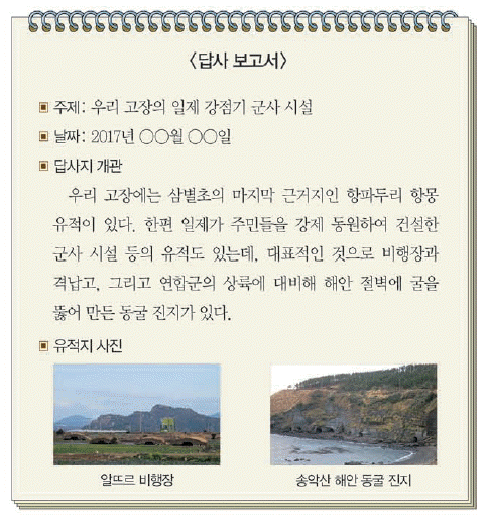
- 탐라총관부가 설치된 목적을 살펴본다.
- 고산리 우적에서 출토된 유물을 알아본다.
- 정약전이 자산어보를 저술한 지역을 찾아본다.
- 김만덕의 빈민 구제 활동에 대란 기록을 조사한다.
- 4ㆍ3 사건으로 많은 주민이 희생된 지역을 파악한다.
(정답률: 48%)
45. 밑줄 그은 ‘이시기’의 일제 정책으로 옳은 것은? [2점]
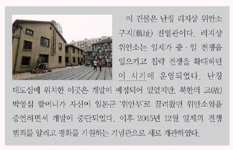
- 회사령을 제정하였다.
- 미곡 공출제를 시행하였다.
- 조선 태형령을 시행하였다.
- 미쓰야 협정을 체결하였다.
- 토지 조사 사업을 실시하였다.
(정답률: 66%)
46. (가), (나) 독립군에 대한 설명으로 옳은 것은? [3점]
- (가) - 자유시 참변으로 큰 타격을 입었다.
- (가) - 연합군의 일원으로 인도, 미얀마 전선을 파견되었다.
- (나) - 대전자령 전투에서 일본군을 격퇴하였다.
- (나) - 중국 관내(關內)에서 결성된 최초의 한인 무장 부대였다.
- (가), (나) - 미군과 연계하여 국내 진공 작전을 계획하였다.
(정답률: 70%)
47. 다음 두 주장이 제기된 계기로 가장 적절한 것은? [1점]
- 이승만 정부가 반동 포로를 석방하였다.
- 김구, 김규식 등이 남북 협상에 참석하였다.
- 제헌 국회에서 반민족 행위 처벌법이 제정되었다.
- 모스크바 3국 외상 회의의 결정 사항이 보도되었다.
- 유엔이 한반도에서 인구 비례에 따른 총선거 실시를 결의하였다.
(정답률: 71%)
48. 밑줄 그은 ‘정부’ 시기의 사회 모습으로 옳은 것은? [2점]
- 프로 야구단이 정식으로 창단되었다.
- 양성평등의 실현을 위해 호주제가 폐지되었다.
- 농촌 근대화를 표방한 새마을 운동이 전개되었다.
- 과외 전면 금지와 대학 졸업 정원제가 시행되었다.
- 외한 위기 극복을 위해 금 모으기 운동이 전개되었다.
(정답률: 61%)
49. (가) 민주화 운동에 대한 설명으로 옳은 것은 보기에서 고른 것은? [3점]
- ㄱ, ㄴ
- ㄱ, ㄷ
- ㄴ, ㄷ
- ㄴ, ㄹ
- ㄷ, ㄹ
(정답률: 63%)
50. 다음 대회를 개최한 정부의 통일 노력으로 옳은 것은? [2점]
- 남북조절위원회를 구성하였다.
- 남북 기본 합의서를 채택하였다.
- 개성 공단 건설 사업을 실현하였다.
- 7ㆍ4 남북 공동 성명을 발표하였다.
- 분단 이후 최초로 남북 정상 회담을 성사시켰다.
(정답률: 61%)